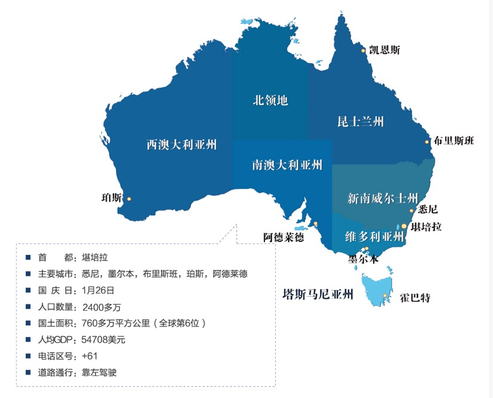

500万澳元投资移民签证，也称作“澳大利亚重大投资者移民”，是2012年11月24日推出的最新的投资移民类别，适合高资产高收入人士。500万澳元投资移民签证无年龄上限要求，无从商背景要求，只需投资500万澳元到澳大利亚境内被认可的投资产品，即可获得四年长期居留签证。满足投资和居住条件后可申请转永居身份。
至少50万澳元投资到新兴公司与小型私营公司的风投或私募股权基（VC/PE）
至少150万澳元投资于新兴企业的基金
其余资金投资到其他基金（可投资股票、债券、优先股、可转债、年金、商业地产）
投资可更改，但需在30天内完成
主申请人每年在澳洲居住超过40天，或配偶每年在澳洲居住超过180天，并持续4年可申请永居
澳大利亚（Australia）拥有2400多万人口，领土面积760多万平方公里，全球第六，不仅是南半球经济最发达的国家，还是全球第十二大经济体系。澳大利亚物产丰富，是全球第四大农产品出口国，其矿产、羊毛的出口量位居世界第一。澳大利亚四面环海，拥有很多自己特有的动植物和自然景观，被评为世界上最适宜居住的地方之一。澳大利亚是典型的移民国家，来自200多个国家、140个民族的移民移居至此，约四分之一的居民出生在澳大利亚以外，多元文化使这片土地更具包容性。
